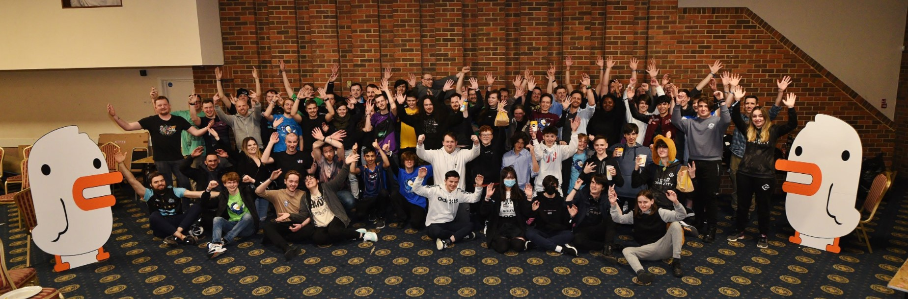
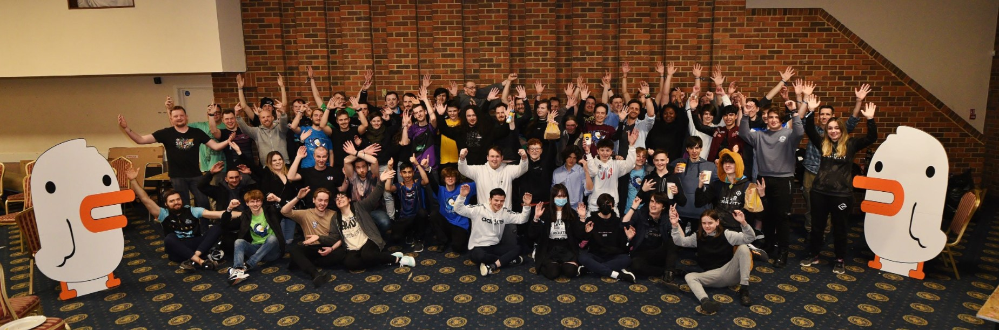

In April of 2022, I got to produce and present a professional broadcast package for an in person eSports event in Bournemouth.
You can watch the saved livestream here.
I worked with Annexed Fate produce a professional livestream package for this event, which had multiple sponsors and was recieved very well by the community.
I used tools such as OBS, UPDeck and Photoshop and After Effects, as well as my own Broadcast Tool software to pull this off. I also worked with Blackmagic cameras and interfaces, GoPros, and a PA system to give the livestream and in person audience a great viewing experience. This event was the greatest thing I have ever attended, so many passionate people willing to put in the hours to get anything done, even without much monetary gain, purely for the passion of the game and for the community. Version 2 of this event is already being planned by the organiser, and I will likely be working with them again to orchestrate another fantastic viewing experience.


 
